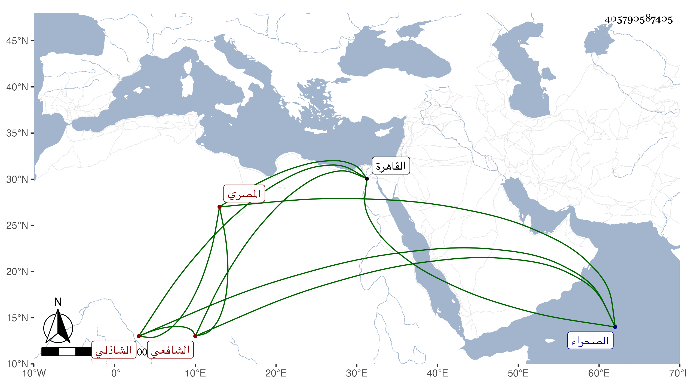

0902Sakhawi.DawLamic.ITO20230111-ara1.EIS1600.405790587405
Biography ID: 405790587405
341
محمد بن عثمان بن عبد الله ناصر الدين أبو الحسن وأبو عبد الله بن فخر الدين المصري الشاذلي الشافعي صهر الزين العراقي ويعرف بابن النيدي . هكذا سمي والده فيما كتبه بخطه عثمان ، والذي في عرضه فخر الدين فخر ، وكذا اقتصر عليه شيخنا في إنبائه فقال : محمد بن الفخر فكأنه غيره حتى لا يعرف أن أصله من القبط . ولد في العشر الأخير من ذي الحجة سنة إحدى وسبعين وسبعمائة وكان أبوه تاجرا فنشأ هو محبا في العلم وحفظ القرآن والمنهاج الفرعي والأصلي وألفية ابن ملك ، وعرض على الأبناسي وابن الملقن والبلقيني والشمسين ابن القطان وابن المكين البكري وأجازوا له وسمع على عزيز الدين المليجي صحيح البخاري وعلى الزين بن الشيخة مسند الشافعي وعليه قرأ البداية للغزالي والأربعين لإمام الدين وعلى التنوخي مسندي عبد والدارمي بفوت في ثانيهما وعلى العراق والهيثمي أشياء منها التاسع عشر وغيره من أمالي ابن الحصين وسمع على الفخر القاياتي الجزء العشرين من الخلعيات بقراءة شيخنا وكذا سمع على الولي العراقي والفوي والطبقة بل ذكر أنه سمع على ابن رزين أيضا صحيح البخاري وعلى البلبيسي صحيح مسلم بل كتب عن الزين العراقي من أماليه ، وحج وجاور وكان موصوفا بالعلم والتفنن والمهارة في العربية وحدث سمع منه الفضلاء ، واستجازه الزين رضوان لابنه عبد الرحمن وصاهر الزين العراقي على ابنته ثم ماتت فتزوج بركة ابنة أخيها الولي ومات وهي في عصمته وذلك في يوم الأحد سابع رمضان سنة سبع وثلاثين بالقاهرة وصلي عليه وعلى سميه ناصر الدين محمد بن تيمية معا وكانا صديقين ، تقدم الناس شيخنا ، ودفن بالصحراء رحمهما الله . وخلف ولدين ، وكان معروفا بكثرة المال فلم يظهر له شيء ذكره شيخنا في إنبائه باختصار .
